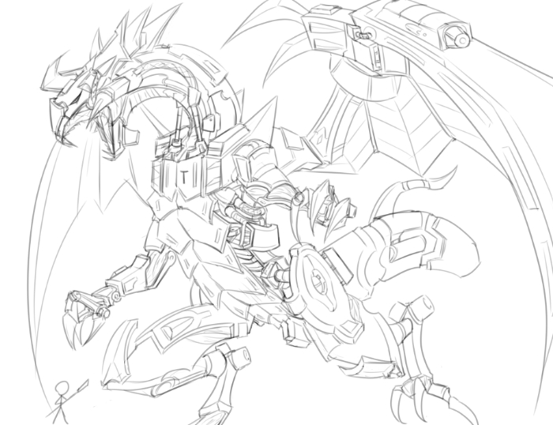

补充设定

姓名:阿斯特莱雅
种族：巨龙
性别:雌性
年龄: 未知
身高:15米
喜欢的东西：？？？及沾有其气味的物品
讨厌的东西：尖刺棒状的利器
喜欢的食物: 贵金属
爱好:让主人？？？坐在背上飞翔
强项:极高的防御力和机动性
弱点:没有远程攻击的手段，
特征
本体为传说中的龙种，个头比文献记载中的还要大上一圈，其身体一半以上都由机械组成，据观测智商约等同15岁左右的人类孩童。
平时都被帝国军严格监管，那些机械装甲也同时锁住限制了大部分力量和功能，只有它唯一认可的主人？？？所装备的万能模块能解锁各项能力。
情报一
高大的身躯附加坚硬的皮毛和重金属装甲，不仅可抵抗大量物理伤害，还有着更变态的魔法抗性，几乎能用“免疫”来形容，千年前曾是是帝国军的王牌武器之一。
唯一令研究员不解的就是它无法吐出元素龙息，而且绝对遵从某个女孩？？？的指令，甚至包括伤害自己。
情报二
？？？在一次随军队进行密穴调查时被发现，当时的它已经失去了大部分躯体，奄奄一息的样子仿佛随时都会死亡。
之后被联络赶来支援的帝国军运回王城，最后在？？？精深的生物科学知识和帝国无条件提供的资源配合下，奇迹般地活了过来并改造成现在这副模样。
情报三
拯救了它的少女亲自为其取名“阿斯特莱雅”，从那以后，每次当？？？喊名字时就会高兴地像小狗那样甩尾巴，只是对其他周围的人来说地动山摇。
另外负责监管的研究院也曾用这个名字称呼过，但后来全身粉碎性骨折后就再没人用名字叫它了。
情报四
“阿斯特莱雅”，意为正义女神，正义的化身，她持有衡量人世善恶的天秤。
原本被派到人间来掌管及审判是非善恶，后来因为看尽人间的丑陋而感到失望。
化作室女星座，因此阿斯特莱雅又叫“维耳戈”，即“处女”之意，是处女座的守护神。